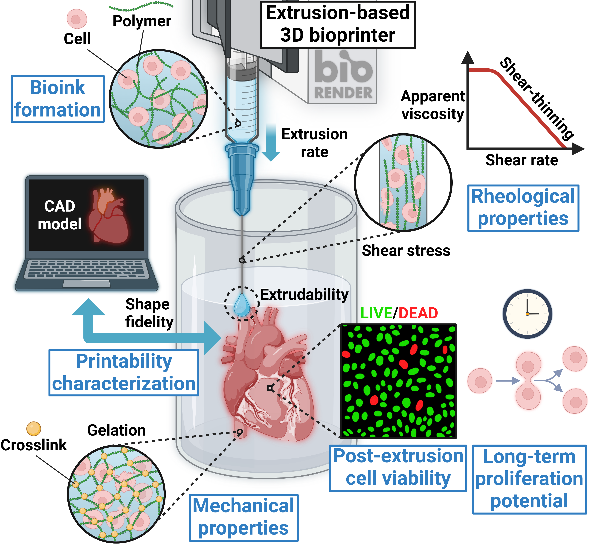
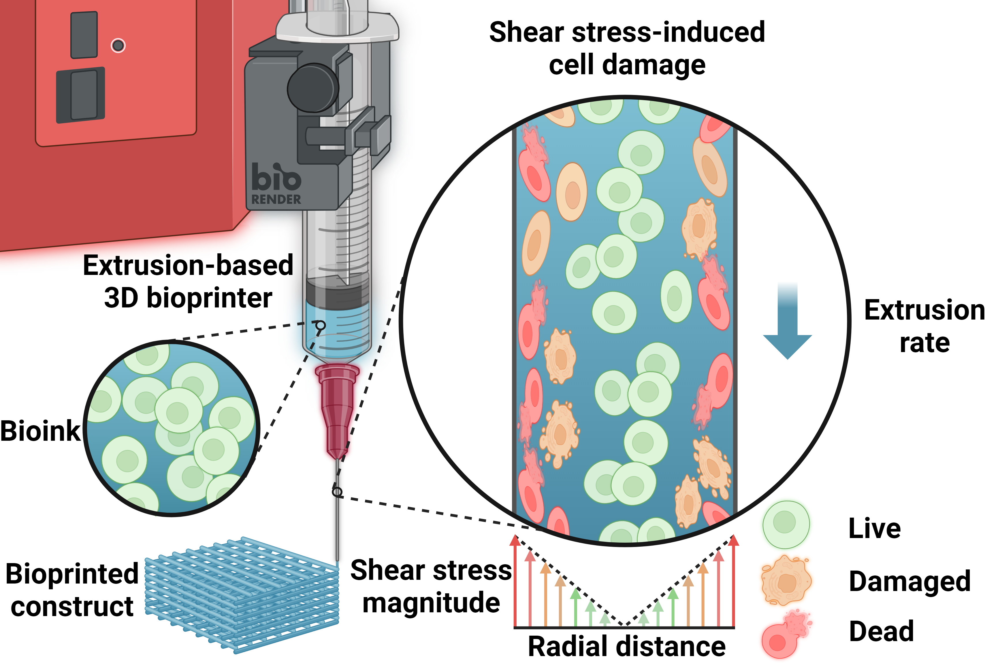

3D Bioprinting (3Dバイオプリンティング)
 
Research Related (研究関連)
Machine learning-based prediction and optimisation framework for as-extruded cell viability in extrusion-based 3D bioprinting (2024/09/11)
Colin Zhang, Kelum Elvitigala, Wildan Mubarok, Yasunori Okano, and Shinji Sakai.
Machine learning-based prediction and optimisation framework for as-extruded cell viability in
extrusion-based 3D bioprinting. Virtual and Physical Prototyping 19, e2400330
(2024).
https://doi.org/10.1080/17452759.2024.2400330.
Open Access.
GitHub Repository: https://github.com/KORINZ/in-silico-bioink-viability-prediction
化学工学会第55回秋季大会プレスリリース 注目講演 [1130件中の22件] (2024/08/28)
https://www.scej.org/news/detail/23235
Open PDF in new tab